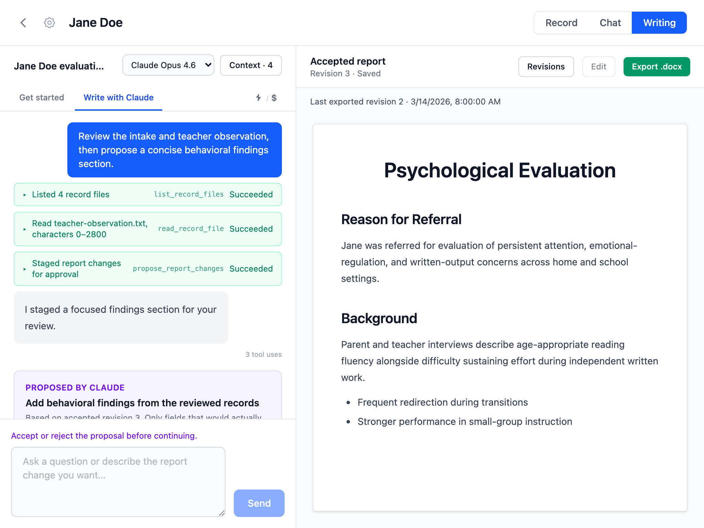
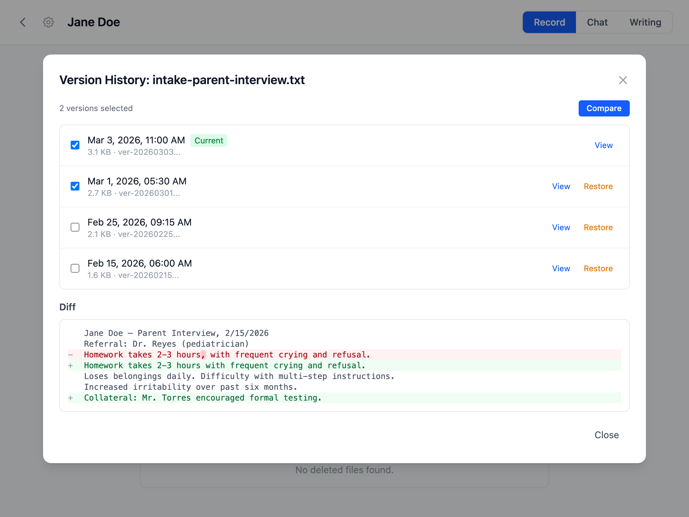
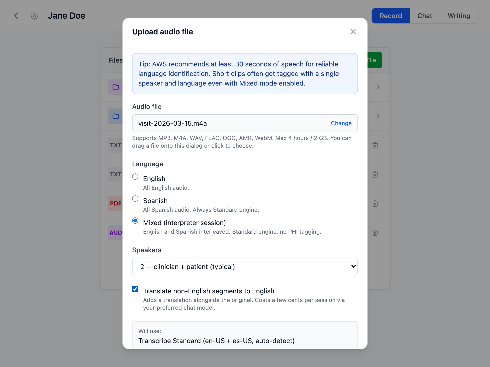
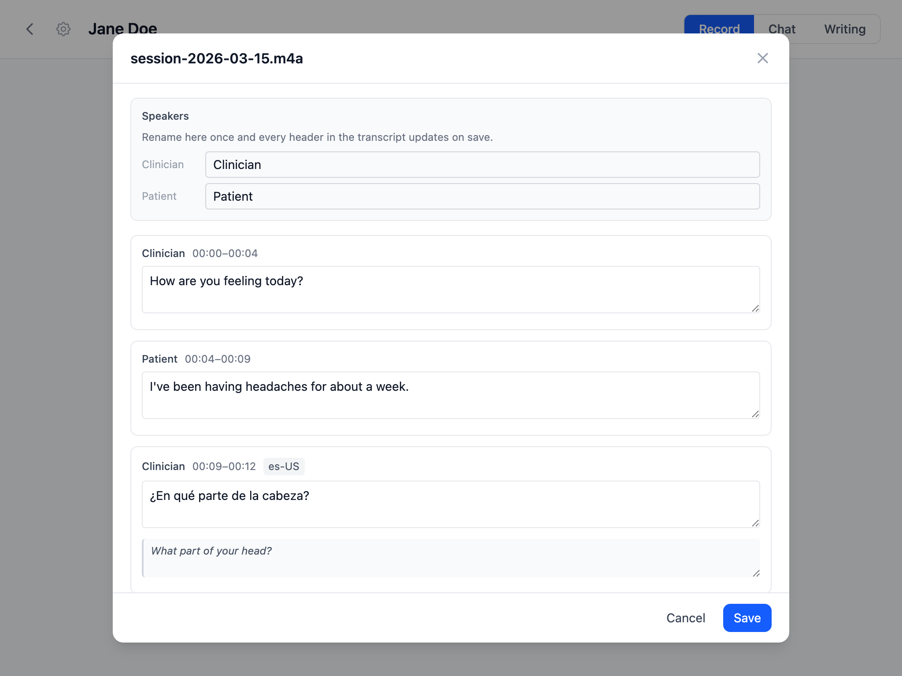
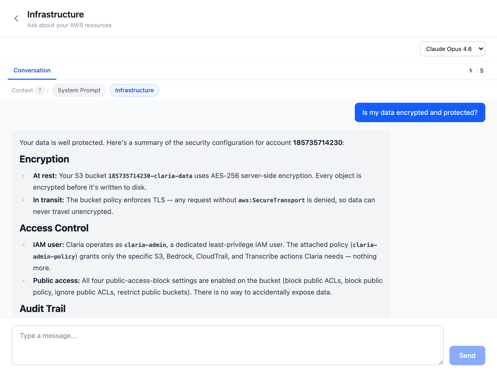
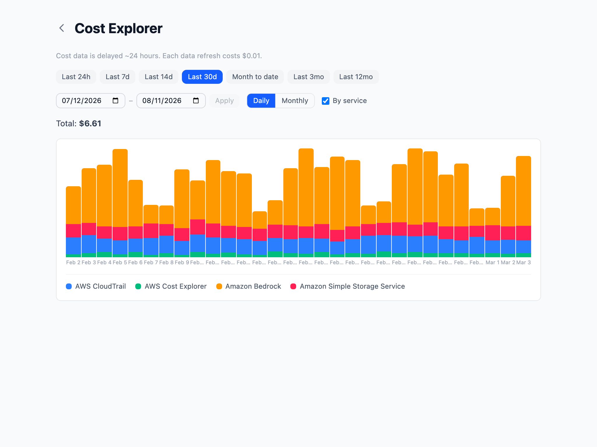

Readable text stays unchanged
Markdown, JSON, CSV, and other printable UTF-8 files are read directly, even with a custom extension or no extension. Claria does not require renaming or flattening structured text first.

Secure AI report writing for clinicians.
Your data, your AWS account, no middleman.
Claria is built for psychologists and clinical practitioners who write evaluation reports. If your day involves psychological evaluations, behavioral assessments, or progress reports, Claria was designed around that clinical work.
This is not a generic AI tool. Claria understands the specific instruments you use and generates structured clinical reports that match your practice.












Move from source material to reviewed clinical writing in five clear steps.
Claria keeps the original record and gives its AI tools readable text. The method depends on what you upload, and generated text stays in your private S3 bucket.
Markdown, JSON, CSV, and other printable UTF-8 files are read directly, even with a custom extension or no extension. Claria does not require renaming or flattening structured text first.
Claria creates a text companion that preserves useful reading order, headings, lists, tables, labels, and paragraph boundaries. The original PDF or DOCX remains available in the record.
Uploaded recordings can use Amazon Transcribe, while recorded voice memos can be transcribed on your device. Transcripts can be corrected and their earlier versions remain available.
Writer can inspect files in the current client record, show which sources it used, and propose focused changes beside the complete accepted report. You can edit directly, inspect prior revisions, and restore an older version as a new revision without erasing history.
Add redacted DOCX templates in Preferences, then choose one before drafting in Writer. The chosen template stays with that report session. Claria stores a managed template ID and display name rather than a local path or original filename. Export retains the template package's fonts, spacing, tables, headers, footers, images, styles, and page layout.
Amazon Web Services is powerful and complex, so cautious setup matters. Claria provides step-by-step guidance for the AWS resources and technical safeguards it uses. You do not need prior AWS expertise, but you should read each step, confirm the BAA, and make sure your practice's administrative and physical safeguards are also in place.
You pay AWS directly — there is no Claria subscription fee. Here's what the models cost:
| Model | Input | Output | Best for |
|---|---|---|---|
| Claude Sonnet 4 | $3 / 1M tokens | $15 / 1M tokens | Everyday reports |
| Claude Opus 4 | $15 / 1M tokens | $75 / 1M tokens | Complex evaluations |
| Claude 3.5 Haiku | $0.80 / 1M tokens | $4 / 1M tokens | Quick drafts |
Claria provides the technical safeguards: encryption at rest and in transit, audit logging via CloudTrail, versioned storage, and least-privilege access controls. It also walks you through signing a Business Associate Agreement (BAA) with AWS, which makes the services Claria uses HIPAA-eligible at no extra cost.
However, HIPAA compliance extends beyond technical controls. As a clinician, you are responsible for the administrative and physical safeguards that apply to your practice — things like workforce training, access management policies, and your organization's privacy procedures. We strongly recommend consulting with a HIPAA compliance specialist to ensure your overall policies and practices meet the requirements for handling protected health information (PHI).
Only two places: your computer and your AWS account.
Claria is free, open-source software. Download the app, and it will walk you through setting up your AWS account and securing your environment step by step.
All releases are available on GitHub Releases.
Claria is currently ad-hoc signed (no Apple Developer certificate). macOS quarantines apps downloaded from the internet, so you may see a warning that the app "can't be opened." This is a one-time fix.
Before opening the DMG, strip the quarantine attribute in Terminal:
xattr -d com.apple.quarantine ~/Downloads/Claria_0.23.0_aarch64.dmgThen open the DMG and drag Claria to Applications. If you already copied it:
xattr -cr /Applications/Claria.appProper Apple Developer signing and notarization is planned — this workaround will go away in a future release.
No. Nothing is hosted for you. The app runs on your machine and connects directly to your own AWS account.
No. Claria is not a middleman. Your data flows between your desktop and your AWS account. The developers never see it, and the app collects no telemetry or usage stats.
No. Claria produces structured clinical reports, not freeform conversation. The AI is used to analyze your documents and generate report sections that match your practice.
Claria itself is free and open source. You pay AWS directly for what you use — there is no recurring Claria fee or subscription. A typical report generation costs pennies.
Amazon Web Services (AWS) is a large cloud platform run by Amazon. Claria stores client records in a private S3 bucket and calls covered AWS services using credentials for an account you control. AWS has many settings, so Claria provides a guided setup and shows the state of the resources it relies on.
Amazon Bedrock is the managed AWS service that runs models such as Claude. Prompts and selected record text are processed by Bedrock under your AWS account; they are not routed through Claria's developers. Before using PHI, accept the AWS BAA, keep access limited, and verify that your organization's HIPAA safeguards are complete.